Willkommen
Schön, dass Sie dabei sind. Dieses Handbuch begleitet Sie durch das CREDO HR-Portal. Das HR-Portal ist eine Internetseite, auf der die Personalverwaltung der CREDO Schulträgergruppe abläuft. „HR" ist die englische Abkürzung für „Human Resources" und bedeutet schlicht „Personalwesen".
Sie brauchen kein technisches Vorwissen. Sie brauchen keine zusätzliche Software. Sie brauchen nur einen Internet-Browser – das ist das Programm, mit dem Sie Internetseiten öffnen, zum Beispiel Microsoft Edge, Google Chrome oder Mozilla Firefox.
Sie können im Portal nichts kaputt machen. Jede wichtige Aktion lässt sich nachvollziehen, und das Portal fragt vor heiklen Schritten immer nach. Probieren Sie ruhig aus.
Was kann das Portal?
Das Portal bündelt alle Personalvorgänge an einem Ort. Ein „Vorgang" ist ein einzelner Fall – zum Beispiel eine Neueinstellung oder ein Austritt. Diese Vorgänge gibt es:
- Onboarding – die Einstellung neuer Mitarbeitender (englisch für „an Bord nehmen").
- Offboarding – das Ausscheiden von Mitarbeitenden (englisch für „von Bord gehen").
- Vertragsende – die rechtzeitige Klärung, ob ein befristeter Vertrag verlängert wird oder ausläuft.
- Verbeamtung – die Übernahme in ein Beamtenverhältnis.
- Mutterschutz – die Begleitung werdender Mütter.
- Elternzeit – die Verwaltung von Elternzeit-Anträgen.
- BEM – das Betriebliche Eingliederungsmanagement (Unterstützung nach längerer Krankheit).
- Exit-Interview – die Abschluss-Befragung beim Austritt.
- Zeugnisse und Beurteilungen – die Bewertung von Mitarbeitenden.
Jeder dieser Bereiche bekommt in diesem Handbuch ein eigenes Kapitel.
So lesen Sie dieses Handbuch
Damit Sie sich schnell zurechtfinden, wiederholen sich einige Bausteine im ganzen Handbuch:
- Jeder Abschnitt beginnt mit einem Satz, der erklärt, wozu der Schritt gut ist.
- Anleitungen sind immer als nummerierte Liste aufgebaut: Schritt 1, Schritt 2, Schritt 3.
- Am Ende eines Abschnitts steht ein grüner Kasten „Das Ergebnis ist". Daran erkennen Sie, ob alles geklappt hat.
Die farbigen Kästen haben feste Bedeutungen:
Ein gelber Kasten gibt Ihnen einen hilfreichen Hinweis oder eine Abkürzung.
Ein roter Kasten warnt Sie vor einem Fehler oder einer Sache, die Sie nicht rückgängig machen können.
Ein blauer Kasten sagt Ihnen, welche Berechtigung Sie für eine Funktion brauchen. Nicht jede Person sieht alle Bereiche.
Ein grüner Kasten beschreibt, was nach den Schritten auf Ihrem Bildschirm zu sehen ist.
An vielen Stellen sehen Sie ein Bildschirmfoto („Screenshot") der jeweiligen Seite. So erkennen Sie sofort, wie der beschriebene Bereich bei Ihnen aussieht. Kleine Abweichungen sind möglich, je nachdem, welche Berechtigungen Sie haben.
1. Die ersten Schritte: Anmelden und Abmelden
Damit niemand Unbefugtes Ihre Personaldaten sieht, ist das Portal durch ein Passwort geschützt. Bevor Sie arbeiten können, melden Sie sich mit Ihrer E-Mail-Adresse und Ihrem Passwort an. Dieser Vorgang heißt „Anmelden" oder „Einloggen".
So melden Sie sich an
Mit den folgenden Schritten gelangen Sie auf Ihre persönliche Startseite.
- Öffnen Sie Ihren Internet-Browser (zum Beispiel Edge oder Chrome).
- Geben Sie oben in der Adresszeile die Adresse des Portals ein und drücken Sie die Eingabetaste.
- Geben Sie in das Feld E-Mail-Adresse Ihre dienstliche E-Mail ein.
- Geben Sie in das Feld Passwort Ihr Passwort ein.
- Klicken Sie auf die Schaltfläche Anmelden.
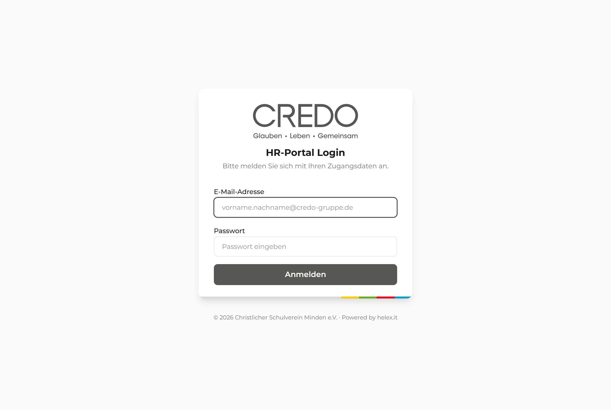
Sie sehen die Startseite des Portals, das sogenannte „Dashboard". Oben rechts steht Ihr Name. Sie sind jetzt angemeldet.
Falls die Meldung „Anmeldung fehlgeschlagen" erscheint, ist das normal und meist harmlos. Prüfen Sie in Ruhe: Ist die E-Mail-Adresse richtig geschrieben? Ist vielleicht die Feststelltaste (Caps Lock) aktiv und schreibt Großbuchstaben? Versuchen Sie es danach erneut. Wenn es weiter nicht klappt, wenden Sie sich an Ihre Administratorin oder Ihren Administrator.
Die automatische Abmeldung verstehen
Aus Sicherheitsgründen meldet das Portal Sie nach längerer Pause selbst ab. So sieht niemand Ihre Daten, wenn Sie den Platz verlassen. Kurz bevor das passiert, werden Sie gewarnt.
Wenn das Fenster „Session läuft ab" erscheint, haben Sie zwei Möglichkeiten:
- Klicken Sie auf Sitzung verlängern, um weiterzuarbeiten.
- Klicken Sie auf Abmelden, wenn Sie fertig sind.
Eine „Session" (sprich: Sesch-n) ist einfach die Zeit, in der Sie angemeldet sind.
Nach „Sitzung verlängern" arbeiten Sie normal weiter. Reagieren Sie nicht, werden Sie zur Sicherheit abgemeldet und sehen wieder die Anmeldeseite.
So melden Sie sich ab
Wenn Sie Ihre Arbeit beenden, melden Sie sich ab. Besonders an Computern, die mehrere Personen nutzen, ist das wichtig.
- Schauen Sie oben rechts in die Ecke des Fensters.
- Klicken Sie dort auf die Schaltfläche Abmelden.
Das Portal zeigt wieder die Anmeldeseite. Ihre Daten sind nun für andere nicht mehr sichtbar.
2. Sich zurechtfinden: Startseite und Menü
Die Startseite heißt im Portal „Dashboard" (sprich: Däsch-bord). Das ist Englisch für „Armaturenbrett" – also die Übersicht, von der aus Sie alles im Blick haben und alles erreichen.
2.1 Aufbau der Startseite
Damit Sie wissen, wo Sie was finden, hier die Bereiche der Startseite von oben nach unten. So müssen Sie nicht lange suchen.
- Kopfzeile (ganz oben): Links das CREDO-Logo, in der Mitte das Menü, rechts Ihr Name und die Schaltfläche „Abmelden".
- Reiter (englisch „Tabs"): Eine Reihe von Karteikarten – Onboarding, Offboarding, Vertragsende, Verbeamtung, Mutterschutz, Elternzeit. Ein Klick wechselt den Bereich.
- Kacheln mit Zahlen: Vier Kästchen zeigen, wie viele Vorgänge Gesamt, Offen, Geprüft und Abgeschlossen sind.
- Kleine Diagramme: Grafiken zeigen die Verteilung der Vorgänge und den Verlauf der letzten Monate.
- Die Tabelle: Die Liste aller Vorgänge mit Name, Einrichtung, Status und Datum.
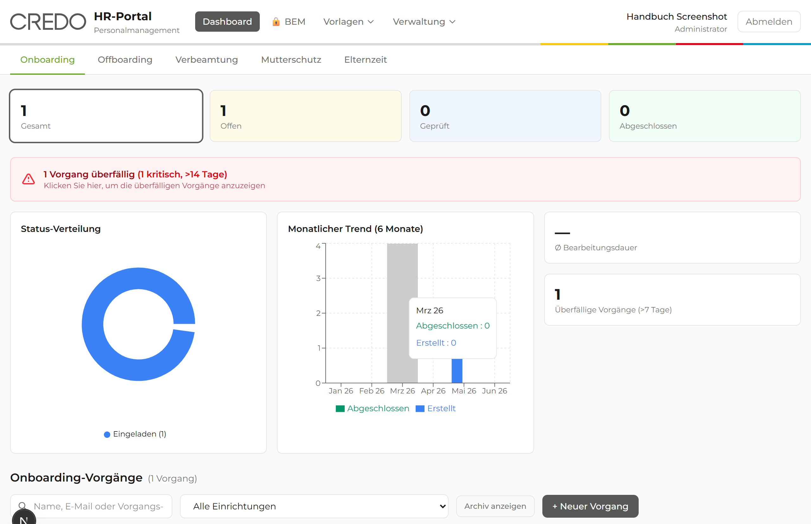
Ein „Vorgang" ist ein einzelner Fall – zum Beispiel die Einstellung von Frau Müller. Jede Zeile in der Tabelle ist ein solcher Vorgang. Ein Klick auf eine Zeile öffnet die Details.
Sie erkennen die fünf Reiter oben und die Tabelle mit den Vorgängen darunter. Sie wissen jetzt, wo Sie welche Information finden.
2.2 Vorgänge suchen und filtern
In einer langen Liste finden Sie eine bestimmte Person am schnellsten über die Suche oder einen Filter. Ein „Filter" blendet alles aus, was Sie gerade nicht brauchen.
- Klicken Sie oben in das Suchfeld mit dem Text „Name, E-Mail oder Vorgangs-ID …".
- Tippen Sie einen Namen oder eine E-Mail-Adresse ein.
- Warten Sie einen Moment – die Tabelle zeigt automatisch die passenden Treffer.
- Möchten Sie nur eine bestimmte Schule sehen, wählen Sie diese im Klappmenü Einrichtung aus. Ein Klappmenü ist eine Auswahlliste, die sich beim Anklicken öffnet.
- Um nur einen Bearbeitungsstand zu sehen, klicken Sie auf eine der Kacheln (zum Beispiel Offen).
Möchten Sie wieder alle Vorgänge sehen, klicken Sie auf Filter zurücksetzen. Mit Archiv anzeigen blenden Sie zusätzlich die bereits abgeschlossenen Vorgänge ein.
Die Tabelle zeigt nur noch die Vorgänge, die zu Ihrer Suche oder Ihrem Filter passen. Die Anzahl der Treffer steht unter der Tabelle.
2.3 Das Menü und die Berechtigungen
Über das Menü in der Kopfzeile erreichen Sie alle weiteren Bereiche. Welche Menüpunkte Sie sehen, hängt von Ihrer „Rolle" ab. Die Rolle bestimmt, was Sie dürfen – so sieht jede Person nur das, was sie für ihre Arbeit braucht.
Das Menü ist in drei Gruppen aufgeteilt:
- Dashboard – die Startseite mit allen Vorgängen.
- 🔒 BEM – der besonders geschützte Bereich für das Eingliederungsmanagement.
- Vorlagen – hier öffnet sich ein Klappmenü mit Formularen, Brief-Vorlagen, Checklisten und mehr.
- Verwaltung – hier öffnet sich ein Klappmenü mit Benutzern, Einrichtungen, Einstellungen und dem Protokoll.
Diese Rollen gibt es im Portal:
| Rolle | Was diese Person typischerweise darf |
|---|---|
| Administrator | Darf alles: alle Vorgänge, alle Einrichtungen, alle Einstellungen und die Benutzerverwaltung. |
| HR-Leitung | Darf fast alles wie der Administrator, nur die Verwaltung der Einrichtungen ist dem Administrator vorbehalten. |
| Sachbearbeiter | Darf Vorgänge anlegen und bearbeiten sowie Formulare und Briefe nutzen. Keine Administrator-Funktionen. |
| Einrichtungsleitung | Sieht nur die eigene Einrichtung. Darf Vorgänge anlegen und Checklisten abhaken. |
| Vorgesetzter | Sieht nur die eigene Einrichtung. Darf vor allem lesen, Checklisten abhaken und Notizen schreiben. |
| BEM-Beauftragte:r | Sieht ausschließlich den geschützten BEM-Bereich und dort nur die freigegebenen Fälle. |
Sehen Sie einen Menüpunkt nicht, ist das kein Fehler. Ihre Rolle gibt diesen Bereich einfach nicht frei. Brauchen Sie den Zugang für Ihre Arbeit, sprechen Sie mit Ihrer Administratorin oder Ihrem Administrator.
Sie wissen, über welche Menügruppe Sie welchen Bereich erreichen. Und Sie verstehen, warum Sie eventuell andere Menüpunkte sehen als eine Kollegin.
3. Onboarding: Neue Mitarbeitende einstellen
Im Onboarding begleiten Sie eine neue Person vom ersten Tag der Einstellung bis zur fertigen Personalakte. Das Portal nimmt Ihnen dabei viel Schreibarbeit ab. Die neue Person füllt ihre Daten selbst aus, und Sie prüfen sie anschließend.
Einen neuen Vorgang anlegen dürfen: Administrator, HR-Leitung, Sachbearbeiter und Einrichtungsleitung.
3.1 Einen Onboarding-Vorgang anlegen
Mit dem ersten Schritt eröffnen Sie den Vorgang. Das Portal erstellt dabei automatisch einen persönlichen Einladungs-Link für die neue Person.
- Klicken Sie auf den Reiter Onboarding.
- Klicken Sie oben rechts auf die Schaltfläche + Neuer Vorgang.
- Geben Sie in das Feld E-Mail des neuen Mitarbeiters die E-Mail-Adresse ein. Dieses Feld ist ein Pflichtfeld.
- Wählen Sie im Klappmenü Einrichtung / Mandant die zuständige Schule oder Kita aus. Auch das ist ein Pflichtfeld.
- Wählen Sie bei Fragebogentyp die passende Art aus (zum Beispiel „Standard – Angestellte" oder „Beamte").
- Klicken Sie auf Vorgang anlegen.
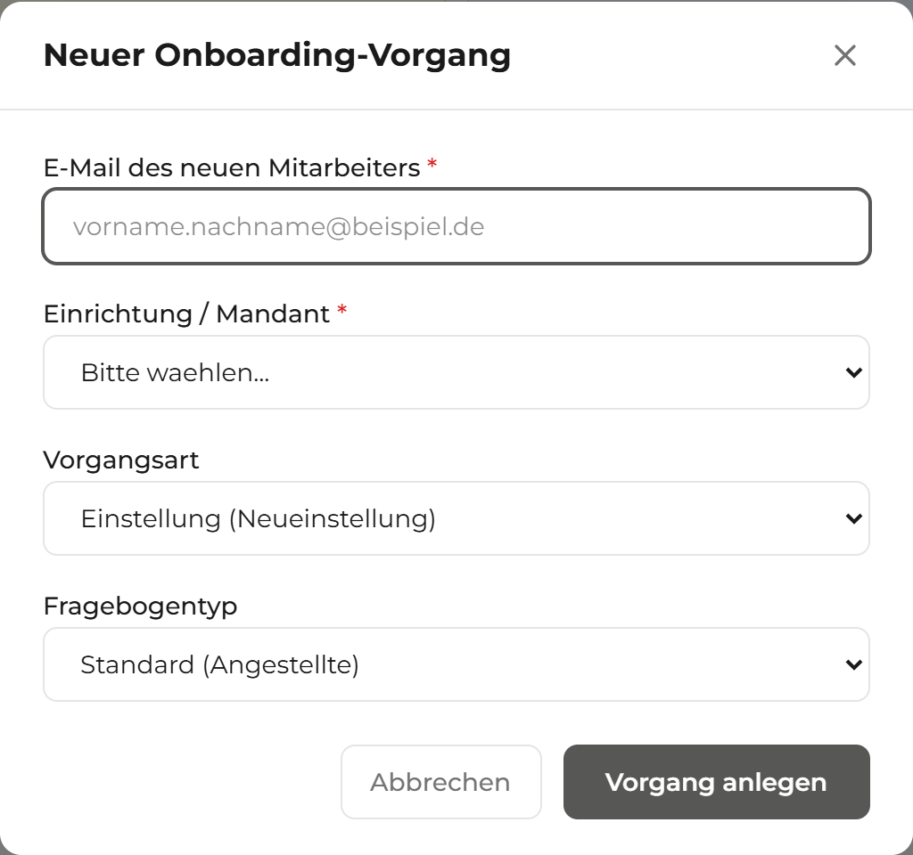
* markierten Felder sind Pflichtfelder.Pflichtfelder müssen Sie ausfüllen, sonst lässt sich der Vorgang nicht speichern. Im Portal sind sie meist mit einem Sternchen * markiert. Hier sind es die E-Mail-Adresse und die Einrichtung.
„Mandant" ist im Portal ein anderes Wort für „Einrichtung". Gemeint ist eine der 16 Schulen, Kitas oder Vereine der CREDO-Gruppe. Jeder Vorgang gehört zu genau einer Einrichtung.
Eine grüne Bestätigung erscheint: „Onboarding-Vorgang wurde erfolgreich angelegt!". Darunter sehen Sie einen Einladungs-Link für den Personalfragebogen.
Die Einladung an die neue Person senden
Damit die neue Person ihren Fragebogen ausfüllen kann, braucht sie den Einladungs-Link. Das Portal verschickt die Einladung automatisch per E-Mail – über SMTP, den E-Mail-Versand des Portals. Sie können den Link aber auch selbst kopieren und versenden.
- Klicken Sie in der Bestätigung auf die Schaltfläche Kopieren neben dem Link.
- Fügen Sie den Link bei Bedarf in eine eigene E-Mail ein (mit Strg+V).
- Klicken Sie auf Schließen, um zum Dashboard zurückzukehren.
Der Einladungs-Link ist ein sogenannter „Magic Link" – ein besonderer Einmal-Zugang ganz ohne Passwort. Wer ihn hat, gelangt direkt zum Fragebogen. Behandeln Sie ihn deshalb vertraulich. Der Link ist 30 Tage gültig.
Der neue Vorgang steht jetzt in der Tabelle auf dem Dashboard. Sein Status lautet „Eingeladen". Die neue Person kann nun ihren Fragebogen ausfüllen.
3.2 Der Personalfragebogen (aus Sicht des neuen Mitarbeitenden)
Diesen Teil füllt die neue Person selbst aus – nicht Sie. Trotzdem ist es gut, den Ablauf zu kennen. So können Sie Fragen am Telefon beantworten. Die Person braucht dafür keine Anmeldung, nur den Einladungs-Link.
Der Fragebogen führt in zehn Schritten durch alle nötigen Angaben. Nach jedem Schritt speichert das Portal automatisch. Die Person kann also jederzeit pausieren und später weitermachen. Diese Daten werden abgefragt:
- Schritt 1 – Persönliche Angaben: Anrede, Name, Geburtsdatum, Familienstand.
- Schritt 2 – Adresse und Kontakt: Anschrift, Telefon, private E-Mail.
- Schritt 3 – Bankverbindung: IBAN (die Kontonummer), Bank.
- Schritt 4 – Sozialversicherung: Sozialversicherungsnummer, Krankenkasse.
- Schritt 5 – Steuer: Steuer-Identifikationsnummer, Steuerklasse, Konfession.
- Schritt 6 – Weitere Beschäftigung: Angaben zu Nebenjobs.
- Schritt 7 – Kinder: Angaben zu Kindern, sofern die Person Kinder hat.
- Schritt 8 – Bildung und Beruf: Abschlüsse.
- Schritt 9 – Masernschutz: Nachweis der Masern-Impfung.
- Schritt 10 – Zusammenfassung und Datenschutz: Kontrolle aller Angaben und die Datenschutz-Einwilligung.
Die Bankverbindung (IBAN), die Sozialversicherungsnummer und die Steuer-ID sind besonders schützenswert. Das Portal verschlüsselt diese Angaben. Das heißt: Sie werden unlesbar gemacht und nur dann wieder lesbar, wenn sie wirklich gebraucht werden.
Am Ende bestätigt die Person den Datenschutz-Hinweis und klickt auf Fragebogen absenden.
Die Person sieht eine Dankesseite mit einer Bestätigungs-Nummer (zum Beispiel CREDO-PF-2026-A1B2C3D4). Im Portal wechselt der Vorgang auf den Status „Eingereicht". Jetzt sind Sie wieder an der Reihe.
3.3 Einen Vorgang öffnen und prüfen
Sobald die Daten eingereicht sind, prüfen Sie sie. Dazu öffnen Sie den Vorgang und schauen sich die Angaben an. So stellen Sie sicher, dass alles vollständig und richtig ist.
- Klicken Sie auf dem Dashboard in der Tabelle auf die Zeile der Person.
- Die Detailseite öffnet sich. Oben sehen Sie Name, Status und Einrichtung.
- Klicken Sie auf den Reiter Fragebogen-Daten.
- Lesen Sie die Angaben in den einzelnen Abschnitten durch (Person, Adresse, Bank und so weiter).
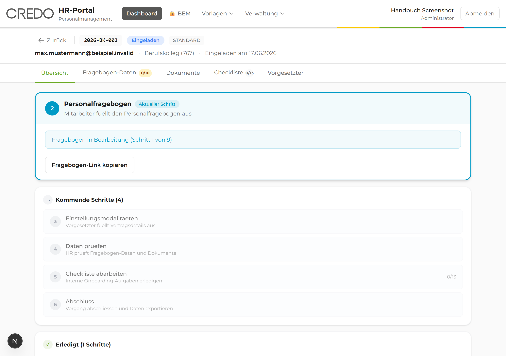
Die Detailseite hat mehrere Reiter. So springen Sie schnell zwischen den Bereichen eines Vorgangs:
- Übersicht – der Fortschritt des Vorgangs, Ihre Notizen und der Starterpaket-Versand.
- Fragebogen-Daten – alle Angaben der Person zum Nachlesen.
- Dokumente – Schreiben erstellen, versenden und Dateien ablegen.
- Checkliste – die Aufgabenliste rund um die Einstellung.
- Vorgesetzter – die Angaben der oder des Vorgesetzten zum Arbeitsvertrag.
Eine Angabe nachträglich korrigieren
Hat sich ein Tippfehler eingeschlichen, können Sie die Daten anpassen. So bleibt die Akte korrekt.
- Klicken Sie im Reiter Fragebogen-Daten auf Daten bearbeiten.
- Ändern Sie die gewünschten Felder.
- Klicken Sie auf Speichern.
Daten bearbeiten dürfen Administrator, HR-Leitung und Sachbearbeiter.
Den Vorgang als geprüft markieren
Wenn alle Angaben stimmen, bestätigen Sie das mit einem Klick. Damit ist für alle sichtbar, dass die Prüfung erledigt ist.
- Klicken Sie oben rechts auf Als geprüft markieren.
Der Status des Vorgangs wechselt auf „Geprüft". In der Übersicht sehen Sie, dass dieser Schritt abgeschlossen ist.
Notizen festhalten
Im Reiter Übersicht können Sie jederzeit Notizen zum Vorgang hinterlassen – etwa Absprachen oder offene Punkte. So geht nichts verloren, und Kolleginnen sehen den Stand.
- Wechseln Sie auf den Reiter Übersicht.
- Schreiben Sie Ihren Text in das Notizfeld.
- Klicken Sie auf Notiz hinzufügen.
Ihre Notiz erscheint in der Liste – mit Datum und Ihrem Namen. Die Anzahl der Notizen sehen Sie auch auf dem Dashboard.
3.4 Dokumente erstellen und das Starterpaket versenden
Im Reiter Dokumente erledigen Sie alle Schreiben rund um die Einstellung an einem Ort. Das Portal füllt die Schreiben automatisch mit den Daten der Person aus. Oben auf der Seite zeigt Ihnen eine Leiste „Sie sind hier" Ihren Platz im Gesamtablauf.
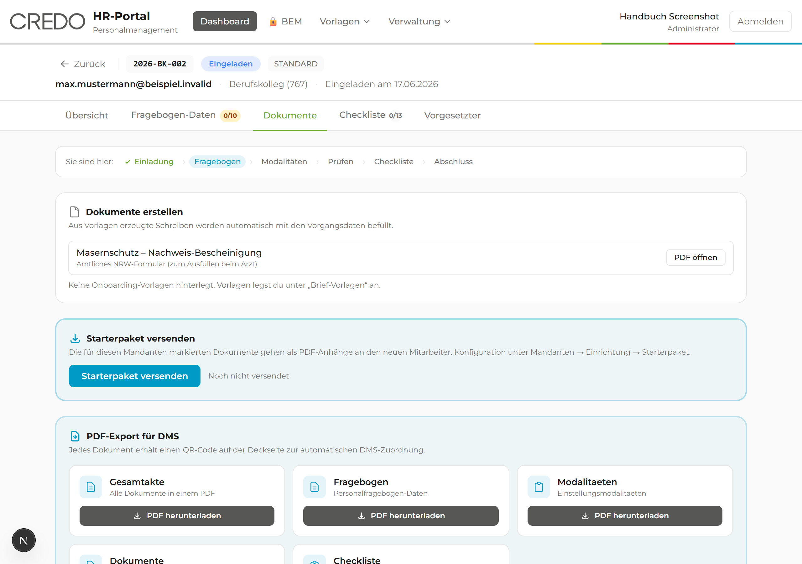
Ein Schreiben aus einer Vorlage erstellen
So erzeugen Sie zum Beispiel ein Anschreiben, ohne Daten abzutippen.
- Öffnen Sie den Vorgang und klicken Sie auf den Reiter Dokumente.
- Suchen Sie im Bereich Dokumente erstellen die gewünschte Vorlage.
- Klicken Sie auf Word für eine bearbeitbare Datei oder auf PDF für ein fertiges Dokument.
- Das Schreiben wird erzeugt und heruntergeladen. Sie finden es im Download-Ordner Ihres Computers.
Eine Word-Datei können Sie noch verändern. Eine PDF-Datei ist fertig und sieht überall gleich aus. Zum Verschicken oder Archivieren nehmen Sie meist PDF.
Für den Masernschutz gibt es ein amtliches Formular des Landes NRW. Klicken Sie auf PDF öffnen, drucken Sie es aus und lassen Sie es beim Arzt ausfüllen.
Das Starterpaket versenden
Das „Starterpaket" ist eine Sammlung wichtiger Dokumente für den Start. Das Portal schickt sie der neuen Person gebündelt als E-Mail mit PDF-Anhängen. Welche Dokumente dabei sind, legt die Verwaltung pro Einrichtung fest.
- Klicken Sie im Reiter Dokumente auf Starterpaket versenden.
- Warten Sie kurz, bis die Bestätigung erscheint.
Erscheint die Meldung „Keine Starterpaket-Dokumente für diesen Mandanten konfiguriert", ist das kein Fehler von Ihnen. Für diese Einrichtung wurde das Paket noch nicht zusammengestellt. Die Administratorin kann das unter „Einrichtungen → Starterpaket" nachholen (siehe Kapitel 12.2).
Eine grüne Meldung bestätigt zum Beispiel „Starterpaket versendet (3 Dokumente)." Im Vorgang wird notiert, wann das Paket verschickt wurde.
Eine PDF-Akte für die Ablage erstellen
Für das digitale Archiv können Sie die gesamte Akte oder einzelne Teile als PDF herunterladen. Jedes dieser PDFs bekommt vorne einen QR-Code. Ein QR-Code ist ein quadratisches Strichbild, das die spätere Ablage automatisch der richtigen Akte zuordnet.
- Gehen Sie im Reiter Dokumente zum Bereich PDF-Export für DMS. „DMS" ist die digitale Aktenablage.
- Wählen Sie, was Sie brauchen – zum Beispiel Gesamtakte oder nur den Fragebogen.
- Klicken Sie auf PDF herunterladen.
Das PDF liegt in Ihrem Download-Ordner – fertig zur Ablage im Archiv, inklusive QR-Code auf der ersten Seite.
3.5 Checkliste abarbeiten und Vorgang abschließen
Die Checkliste sorgt dafür, dass keine Aufgabe vergessen wird – vom IT-Arbeitsplatz bis zum Schlüssel. Sie haken jede erledigte Aufgabe ab. Ein Fortschrittsbalken zeigt, wie weit Sie sind.
- Öffnen Sie den Vorgang und klicken Sie auf den Reiter Checkliste.
- Lesen Sie die Aufgaben. Sie sind nach Themen geordnet.
- Klicken Sie auf das Kästchen vor einer Aufgabe, sobald sie erledigt ist.
- Bei Bedarf schreiben Sie über das Notiz-Symbol eine kurze Bemerkung dazu.
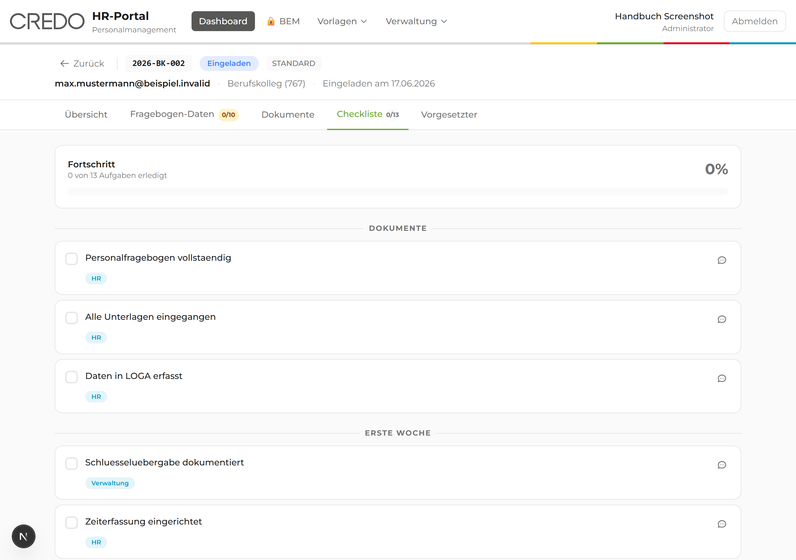
Das Kästchen wird grün und bekommt ein Häkchen. Der Fortschrittsbalken oben steigt. Bei „100 %" sind alle Aufgaben erledigt.
Den Vorgang abschließen
Ist alles geprüft und erledigt, schließen Sie den Vorgang ab. Damit gilt die Einstellung im Portal als vollständig bearbeitet.
- Wechseln Sie auf den Reiter Übersicht.
- Klicken Sie auf Vorgang abschließen.
- Bestätigen Sie die Nachfrage.
Einen Vorgang abschließen dürfen Administrator und HR-Leitung.
Der Status wechselt auf „Abgeschlossen". Der Vorgang wandert ins Archiv. Über Archiv anzeigen auf dem Dashboard finden Sie ihn jederzeit wieder.
4. Offboarding: Austritte verwalten
Im Offboarding begleiten Sie das Ausscheiden einer Person – etwa bei Kündigung oder Renteneintritt. Das Portal hilft Ihnen, an alles zu denken: Übergaben, Rückgaben von Gegenständen und die Abschluss-Befragung.
Einen Austritt anlegen
Mit diesen Schritten eröffnen Sie den Austrittsvorgang.
- Klicken Sie auf den Reiter Offboarding.
- Klicken Sie auf Neuer Austritt.
- Füllen Sie die Pflichtfelder aus: Vorname, Nachname, Dienst-E-Mail und Einrichtung.
- Wählen Sie bei Austrittsart den Grund aus (zum Beispiel „Kündigung Arbeitnehmer" oder „Rente / Pension").
- Tragen Sie bei Letzter Arbeitstag das Datum ein.
- Geben Sie optional eine private E-Mail an – sie wird für die Abschluss-Befragung gebraucht.
- Klicken Sie auf Austritt anlegen.
Geben Sie die private E-Mail-Adresse gleich mit an. Nach dem letzten Arbeitstag ist die Dienst-Adresse oft schon abgeschaltet. Über die private Adresse erreichen Sie die Person für das Exit-Interview noch.
Der Austritt erscheint in der Liste mit dem Status „Erfasst". Über Vorgang öffnen gelangen Sie zur Detailseite.
Den Austritt bearbeiten
Auf der Detailseite begleiten Sie den Austritt bis zum Abschluss. Sie nutzen dazu die Reiter:
- Übersicht – Stammdaten und der Bearbeitungsstand.
- Checkliste – alle Aufgaben zum Abhaken.
- Rückgaben – Gegenstände wie Schlüssel, Laptop oder Dienstwagen erfassen und als zurückgegeben markieren.
- Dokumente – Dateien hochladen und ablegen.
- Notizen – Bemerkungen festhalten.
- Exit-Interview – die Abschluss-Befragung starten (siehe Kapitel 9).
- Zeugnis – die Bewertung für das Arbeitszeugnis vorbereiten.
Der Bearbeitungsstand durchläuft mehrere Stufen: Erfasst → Kündigungsfrist → Übergabe → Endabrechnung → Abgeschlossen. Den Stand stellen Sie über das Status-Klappmenü auf der Übersicht ein.
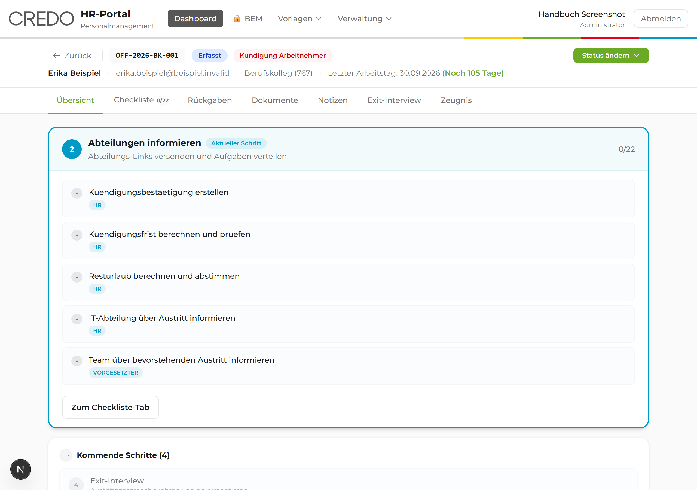
Eine Rückgabe erfassen
So behalten Sie den Überblick, welche Gegenstände noch ausstehen.
- Öffnen Sie den Reiter Rückgaben.
- Klicken Sie auf + Gegenstände.
- Wählen Sie die Kategorie (zum Beispiel „IT-Hardware" oder „Schlüssel") und geben Sie eine Bezeichnung ein.
- Sobald die Person den Gegenstand zurückgibt, klicken Sie auf Rückgabe bestätigen.
Der Gegenstand ist als zurückgegeben markiert. So sehen Sie auf einen Blick, was noch fehlt.
Aufgaben an Abteilungen verteilen
Beim Austritt müssen oft mehrere Abteilungen mithelfen – etwa die IT und die Hausverwaltung. Das Portal kann jeder Abteilung ihre eigene Aufgabenliste per Link zusenden. Die Abteilung braucht dafür keine Anmeldung.
- Suchen Sie auf der Detailseite den Bereich Abteilungs-Checklisten.
- Klicken Sie auf Abteilungs-Links versenden.
Die beteiligten Abteilungen erhalten je einen Link zu ihrer Aufgabenliste. Ihre Rückmeldungen laufen automatisch im Vorgang zusammen.
5. Vertragsende: befristete Verträge rechtzeitig klären
Läuft ein befristeter Vertrag aus, brauchen Sie rechtzeitig eine Entscheidung: Wird die Person weiterbeschäftigt, oder endet die Zusammenarbeit? Genau dafür gibt es den Vorgangstyp Vertragsende. Er entsteht meist automatisch – das Portal erhält die Meldung über auslaufende Verträge wöchentlich aus Ihrem Personalsystem (DokuBit) über eine technische Anbindung (n8n). Sie können einen Vorgang aber auch von Hand anlegen.
Ob eine befristet beschäftigte Person weiterarbeitet, ist eine fachliche Entscheidung der Schul- oder Fachbereichsleitung – nicht der Personalverwaltung. HR stößt deshalb eine Anfrage an die Führungskraft an. Die Führungskraft entscheidet „Ja" oder „Nein" und füllt bei „Ja" gleich die neuen Vertragsdaten aus. HR sorgt anschließend für die Umsetzung: den Vertrag erzeugen oder das Offboarding bestätigen.
5.1 Die Übersicht und die Fristen-Ampel
Auf dem Reiter Vertragsende sehen Sie alle Vorgänge dieser Art in einer Tabelle – mit Vorgangs-Nummer (zum Beispiel VE-2026-GYM-002), Mitarbeiter, Einrichtung, Vertragsende-Datum, Frist und Status.
Damit nichts zu spät auffällt, zeigt jede Zeile eine farbige Fristen-Ampel. Sie berechnet sich automatisch aus dem verbleibenden Zeitraum bis zum Vertragsende und ist nicht gespeichert, sondern immer aktuell:
| Farbe | Zeit bis Vertragsende | Was zu tun ist |
|---|---|---|
| Blau – Beobachten | 7–12 Monate | Der Vorgang ist neu entstanden. Noch kein akuter Handlungsbedarf, aber im Blick behalten. |
| Gelb – Warnung | 3–6 Monate | Die Entscheidung vorbereiten und das Gespräch mit der Führungskraft suchen. |
| Rot – Kritisch | 1–2 Monate | Zügig handeln: Anfrage stellen oder nachfassen. |
Normalerweise entstehen Vertragsende-Vorgänge automatisch. Fehlt ausnahmsweise einer, klicken Sie auf + Vorgang anlegen und tragen Sie Vorname, Nachname, Dienst-E-Mail, Einrichtung und das Vertragsende-Datum ein (Pflichtfelder). Vertragsbeginn und Personalnummer sind freiwillig.
Sie sehen auf einen Blick, welche befristeten Verträge wie dringend eine Entscheidung brauchen, sortiert nach Ampelfarbe und Status.
5.2 Die Anfrage an die Führungskraft stellen
Öffnen Sie den Vorgang, um die Anfrage auf den Weg zu bringen. Die Detailseite hat die Reiter Übersicht, Vertragsdaten und Dokumente. Eine Schrittleiste oben zeigt „Sie sind hier": Angelegt → Anfrage → Rückmeldung → Vertrag/Offboarding → Abschluss.
- Klicken Sie auf Anfrage an Vorgesetzten senden →.
- Die Führungskraft erhält per E-Mail einen Magic Link – einen Einmal-Zugang ohne eigenes Passwort.
- Im Formular entscheidet die Führungskraft „Ja, übernehmen" oder „Nein, nicht übernehmen".
- Bei „Ja" füllt sie zugleich die neuen Vertragsdaten aus: neuer Vertragsbeginn, Befristung/Vertragsende, Wochenstunden, Entgeltgruppe, Stufe, Urlaubstage, Betriebsstätte, Stellenbeschreibung und mehr. Bei „Nein" trägt sie eine kurze Begründung ein.
Eine Administratorin kann pro Einrichtung festlegen, welche Felder im Formular erscheinen und welche Pflicht sind – unter Mandanten → Vertragsende-Konfiguration (siehe Kapitel 12.2).
Antwortet die Führungskraft nicht rechtzeitig, erinnert das Portal automatisch – gestaffelt nach Dringlichkeit (bei „Kritisch" häufiger als bei „Beobachten"). Sie können zusätzlich manuell auf Erinnerung senden klicken: Das nutzt den bestehenden Link erneut. Mit Anfrage erneut senden erzeugen Sie dagegen einen neuen Link. Reagiert die Führungskraft trotz dreier Erinnerungen nicht, meldet das Portal den Vorgang automatisch an die Personalverwaltung (Eskalation).
Wissen Sie die Antwort der Führungskraft bereits aus einem Gespräch, können Sie auf der Detailseite auch direkt Direkt Nicht-Übernahme (Offboarding) → auslösen, ohne erst den Formular-Umweg abzuwarten.
Der Status wechselt auf „Anfrage beim Vorgesetzten". Sobald die Führungskraft geantwortet hat, sehen Sie auf der Detailseite entweder die Meldung „Die Führungskraft möchte weiterbeschäftigen" oder „Die Führungskraft lehnt die Weiterbeschäftigung ab" samt Begründung.
5.3 Übernahme: den Vertrag erzeugen
Hat die Führungskraft der Übernahme zugestimmt, vollziehen Sie das im Portal.
- Prüfen Sie auf der Detailseite die von der Führungskraft eingetragenen Vertragsdaten (Reiter Vertragsdaten).
- Wechseln Sie auf den Reiter Dokumente und erzeugen Sie den Verlängerungs- oder Entfristungsvertrag aus einer Vorlage – genau wie im Onboarding (siehe Kapitel 3.4), nur mit dem Vorlagen-Modul Vertragsverlängerung.
- Sobald der unterschriebene Vertrag zurück ist, klicken Sie auf Unterschriebenen Vertrag erfassen.
- Klicken Sie abschließend auf Vorgang abschließen.
Arbeitet die Person über das alte Vertragsende hinaus weiter, ohne dass der neue Vertrag unterschrieben zurück ist, kann der Vertrag rechtlich automatisch unbefristet werden (§ 15 Abs. 5 TzBfG). Solange „Unterschriebenen Vertrag erfassen" noch nicht angeklickt ist, macht Sie das Portal mit einer Warnbox darauf aufmerksam.
Der Status wandert über „Vertrag erstellt" zu „Vertrag unterschrieben" und schließlich zu „Abgeschlossen". Die Person ist weiterbeschäftigt, mit einem neuen, ordnungsgemäß erzeugten Vertrag.
5.4 Keine Übernahme: das Offboarding anlegen
Lehnt die Führungskraft die Weiterbeschäftigung ab, übernimmt das Portal den größten Teil der Arbeit für Sie.
- Lesen Sie die Begründung der Führungskraft auf der Detailseite.
- Klicken Sie auf Offboarding anlegen →.
- Bestätigen Sie die Sicherheitsabfrage.
Das Portal legt automatisch einen Offboarding-Vorgang an (Austrittsgrund „Befristungsende") und übernimmt dabei die Personendaten sowie den letzten Arbeitstag (= das bisherige Vertragsende). Der Vertragsende-Vorgang zeigt danach den Status „Keine Übernahme" und ist mit dem neuen Offboarding verknüpft. Von dort an läuft alles im gewohnten Offboarding-Ablauf weiter (siehe Kapitel 4) – inklusive Auslaufmitteilung und Arbeitszeugnis.
5.5 Die eingebauten Schutz-Hinweise
Weil bei befristeten Verträgen leicht rechtliche Fristen übersehen werden, weist das Portal an mehreren Stellen automatisch auf typische Stolperfallen hin. Sie müssen diese Hinweise nicht auswendig kennen – das Portal zeigt sie zur richtigen Zeit an:
| Hinweis | Worum es geht |
|---|---|
| Entfristungsfalle | Warnt, solange nach „Vertrag erstellt" noch keine Unterschrift erfasst ist (siehe Kapitel 5.3). |
| Kettenbefristung | Weist hin, wenn eine sachgrundlose Befristung die gesetzlichen Grenzen erreicht (insgesamt über 24 Monate oder mehr als drei Verlängerungen). |
| MAV-Beteiligung | Auf der Detailseite tragen Sie den Stand der Mitarbeitervertretungs-Beteiligung ein: „Nicht erforderlich", „Angehört", „Zugestimmt" oder „Widerspruch". |
| Vorstand/GF-Abstimmung | Im Übernahme-Zweig bestätigt die Führungskraft, ob die Weiterbeschäftigung mit Vorstand oder Geschäftsführung abgestimmt ist, und trägt bei „Ja" einen kurzen Nachweis ein. Bei „Nein" erscheint eine Warnbox – der Vorgang wird dadurch nicht blockiert. Diese Frage lässt sich pro Einrichtung abschalten. |
| Mehrfachbeschäftigung | Ist dieselbe Person an mehreren Einrichtungen beschäftigt, zeigt eine eigene Karte die weiteren Mandanten an. |
Vertragsende-Vorgänge anlegen und bearbeiten dürfen Administrator, HR-Leitung und Sachbearbeiter. Die Führungskraft selbst braucht kein Benutzerkonto – sie arbeitet ausschließlich über den Magic Link.
Damit die automatische Eskalation (siehe Kapitel 5.2) und die montägliche Sammel-Mail zu unbearbeiteten, dringenden Vertragsenden ankommen, muss eine Administratorin dafür einmalig Empfänger unter Einstellungen → E-Mail-Vorlagen hinterlegen (siehe Kapitel 12.3). Ohne hinterlegte Empfänger werden diese beiden E-Mails übersprungen.
6. Verbeamtung (PSI)
Die Verbeamtung begleitet die Übernahme einer Lehrkraft ins Beamtenverhältnis. Dieser Prozess ist lang und hat viele Beteiligte. Das Portal legt deshalb beim Start automatisch alle nötigen Aufgaben und Phasen an.
„PSI" ist die interne Abkürzung für diesen Verbeamtungs-Prozess. Sie taucht im Menü und auf Schaltflächen auf. Gemeint ist immer die Übernahme ins Beamtenverhältnis.
Eine Verbeamtung anlegen
Das Anlegen geschieht in zwei Schritten („Schritt 1 von 2"). Im ersten Schritt erfassen Sie die Lehrkraft, im zweiten die weiteren Beteiligten.
Schritt 1: die Lehrkraft
- Klicken Sie auf den Reiter Verbeamtung und dann auf Neue Verbeamtung.
- Füllen Sie die Pflichtfelder aus: Vorname, Nachname, Dienst-E-Mail und Schule.
- Tragen Sie bei Bedarf den geplanten Vertragsbeginn und die Personalnummer ein.
- Klicken Sie auf Weiter.
Schritt 2: die Beteiligten
Am Verfahren wirken weitere Personen mit. Sie erhalten später automatisch ihre eigenen Zugangs-Links.
- Geben Sie Name und E-Mail der Schulleitung ein (für Beurteilungen und Referenzen).
- Geben Sie die E-Mail des Amtsarztes ein (für Erinnerungen an den Untersuchungstermin).
- Geben Sie bei Bedarf die E-Mail des Beirats ein.
- Klicken Sie auf Verbeamtung anlegen.
Eine grüne Bestätigung erscheint. Das Portal hat den Vorgang mit allen Phasen und Checklisten-Punkten angelegt. Sie können sofort mit der Bearbeitung beginnen.
Eine Verbeamtung bearbeiten
Auf der Detailseite sehen Sie oben eine Zeitleiste mit vier großen Phasen und einen Fortschrittsbalken. So erkennen Sie sofort, wo das Verfahren gerade steht:
- Phase I – Antrag und Beurteilung.
- Phase II – Verwaltung (mit mehreren Unterschritten, etwa Amtsarzt und Besoldung).
- Phase III – Probezeit.
- Phase IV – Übernahme auf Lebenszeit.
Die Reiter Übersicht, Checkliste, Beurteilungen, Dokumente und Protokoll führen Sie durch die einzelnen Aufgaben. Sie arbeiten die Checkliste ab wie beim Onboarding: Aufgabe anklicken, Häkchen setzen.
Mit jeder erledigten Aufgabe füllt sich der Fortschrittsbalken. Die Zeitleiste zeigt, welche Phase abgeschlossen ist und welche gerade läuft.
7. Mutterschutz
Im Mutterschutz begleiten Sie eine werdende Mutter vor und nach der Geburt. Das Portal hilft Ihnen, Fristen und die nötigen Schritte im Blick zu behalten.
Einen Mutterschutz anlegen
So erfassen Sie einen neuen Mutterschutz-Vorgang.
- Klicken Sie auf den Reiter Mutterschutz und dann auf Neuer Mutterschutz.
- Füllen Sie Name, E-Mail und Einrichtung aus.
- Tragen Sie den voraussichtlichen Geburtstermin ein.
- Wählen Sie den Einrichtungstyp und die Personalgruppe aus.
- Klicken Sie auf Speichern.
Der Vorgang erscheint in der Liste mit dem Status „Gemeldet".
Den Status weiterstellen
Der Mutterschutz durchläuft feste Stufen. Sie stellen den Stand über die passenden Schaltflächen weiter. So ist immer klar, wo der Vorgang steht.
- BAD beauftragen – stellt den Status auf „BAD beauftragt". „BAD" ist der Betriebsärztliche Dienst, also die Betriebsärztin oder der Betriebsarzt.
- BAD abschließen – die ärztliche Beurteilung liegt vor.
- Aktivieren – der Mutterschutz läuft.
- Beenden – der Mutterschutz ist vorbei.
Der Status wechselt mit jedem Schritt. Den Verlauf sehen Sie jederzeit in der Übersicht des Vorgangs.
8. Elternzeit
In diesem Bereich verwalten Sie Elternzeit-Anträge – von der ersten Meldung bis zur Rückkehr. Das Portal erstellt die nötigen Bescheinigungen und erinnert Sie an Fristen.
Einen Elternzeit-Vorgang bearbeiten
Auf der Detailseite führt Sie ein Ablauf-Balken durch die Schritte. Ein Banner „Nächster Schritt" sagt Ihnen jeweils, was als Nächstes ansteht. Diese Reiter stehen zur Verfügung:
- Übersicht – Angaben zum Kind und zur Person.
- Abschnitte – die einzelnen Elternzeit-Zeiträume (von wann bis wann).
- Checkliste – die Aufgaben im Verfahren.
- Briefe – die erzeugten Bescheinigungen.
- Fristen – wichtige Termine, farblich nach Dringlichkeit.
- Dokumente und Notizen – Ablage und Bemerkungen.
Einen Antrag genehmigen
Liegt ein Antrag vollständig vor, genehmigen Sie ihn. Das Portal erstellt dazu die Arbeitgeber-Bescheinigung.
- Öffnen Sie den Vorgang.
- Klicken Sie auf Genehmigen.
- Bestätigen Sie im folgenden Fenster.
Für Lehrkräfte gibt es bei der Elternzeit eine besondere Regel zu den Schulferien. Damit das Portal die Ferien kennt, müssen diese unter „Einstellungen → Schulferien" gepflegt sein (siehe Kapitel 12.3).
Der Antrag ist genehmigt, und die Bescheinigung wird erstellt. Über Magic Link versenden können Sie der Person zuvor einen Zugang zum Antrag schicken; mit Ablehnen lehnen Sie einen Antrag mit Begründung ab.
9. BEM: Betriebliches Eingliederungsmanagement
Das „Betriebliche Eingliederungsmanagement" – kurz BEM – ist ein gesetzlich vorgeschriebenes Angebot. Es unterstützt Mitarbeitende, die länger krank waren, bei der Rückkehr an den Arbeitsplatz. Weil es dabei um Gesundheitsdaten geht, ist dieser Bereich besonders streng geschützt.
Der BEM-Bereich ist eine „versiegelte Akte". Das bedeutet: Nur ausdrücklich freigegebene Personen sehen einen Fall. Außerdem wird jeder einzelne Zugriff protokolliert – also festgehalten, wer wann hineingeschaut hat. Öffnen Sie BEM-Fälle nur, wenn es Ihre Aufgabe ist.
Den BEM-Bereich sehen nur freigegebene Personen, zum Beispiel BEM-Beauftragte. Sehen Sie den Menüpunkt „🔒 BEM" nicht oder ist die Liste leer, haben Sie für diese Fälle keine Freigabe. Das ist so gewollt.
Den BEM-Bereich öffnen
So gelangen Sie zur Übersicht der BEM-Fälle.
- Klicken Sie im Menü oben auf 🔒 BEM.
- Sie sehen oben Kennzahlen (laufende, abgeschlossene Fälle) und darunter die Liste der freigegebenen Fälle.
- Über das Klappmenü und das Suchfeld grenzen Sie die Liste ein.
Steht am Menüpunkt „🔒 BEM" eine rote Zahl, gibt es so viele Fristen, die Ihre Aufmerksamkeit brauchen. Ein roter Hinweis-Kasten in der Liste nennt die überfälligen und bald fälligen Termine.
Sie sehen die Übersicht aller für Sie freigegebenen BEM-Fälle und erkennen sofort, wo Handlungsbedarf besteht.
Einen BEM-Fall bearbeiten
Ein einzelner Fall hat mehrere Reiter. Damit dokumentieren Sie den gesamten Ablauf sauber und nachvollziehbar:
- Übersicht – die Stammdaten und der zeitliche Verlauf.
- Gespräche – Erst- und Folgegespräche mit Datum, Ort und Teilnehmenden festhalten.
- Maßnahmen – vereinbarte Schritte zur Wiedereingliederung erfassen.
- Einwilligungen – die nötigen Zustimmungen der betroffenen Person einholen.
- Dokumente und Fristen – Ablage und Termine.
- Zugriffe – wer auf diesen Fall zugreifen darf.
- Protokoll – die lückenlose Aufzeichnung aller Zugriffe und Änderungen.
Ein BEM darf nur mit Zustimmung der betroffenen Person stattfinden. Über den Reiter Einwilligungen fordern Sie diese Zustimmung an. Die Person erhält dafür einen geschützten Link.
Jeder Schritt – vom ersten Gespräch bis zur Maßnahme – ist dokumentiert. Das Portal hält den Status fest und erinnert an Fristen.
Auswertungen ansehen
Für Berichte gibt es eine Statistik-Seite. Sie zeigt nur anonyme Gesamtzahlen, niemals einzelne Personen. So bleiben die Auswertungen datenschutzkonform.
Sie sehen zusammengefasste Zahlen über alle Fälle – ohne Rückschluss auf einzelne Mitarbeitende.
10. Exit-Interview: Die Abschluss-Befragung
Das „Exit-Interview" ist eine freiwillige Befragung beim Austritt. „Exit" ist Englisch für „Ausgang". Die Rückmeldungen helfen der CREDO-Gruppe, sich zu verbessern. Diesen Fragebogen füllt die austretende Person selbst aus – ähnlich wie den Personalfragebogen.
So läuft die Befragung für die austretende Person ab
Es ist hilfreich, den Ablauf zu kennen, falls Fragen aufkommen. Die Person braucht nur den zugesandten Link, keine Anmeldung.
- Die Person öffnet den Link aus der E-Mail.
- Sie bestätigt zuerst den Datenschutz-Hinweis.
- Sie beantwortet die Fragen, die nach Themen geordnet sind.
- Am Ende prüft sie die Zusammenfassung und klickt auf Absenden.
Die Befragung nutzt mehrere Antwortformen: Sterne zum Bewerten, freie Textfelder, Auswahllisten und eine Skala von 0 bis 10. Die Person sieht oben immer, im wievielten Schritt sie gerade ist.
Die Person sieht eine Dankesseite und kann das Fenster schließen. Die Antworten laufen vertraulich im Portal zusammen und stehen für Auswertungen bereit.
Eine Befragung starten
Sie selbst starten die Befragung aus dem Austrittsvorgang heraus. So bekommt die richtige Person den richtigen Link.
- Öffnen Sie den passenden Offboarding-Vorgang (siehe Kapitel 4). Kam der Austritt aus einem Vertragsende, ist er dort bereits verknüpft (siehe Kapitel 5).
- Wechseln Sie auf den Reiter Exit-Interview.
- Lösen Sie den Versand des Befragungs-Links aus.
Die austretende Person erhält den Link zur Befragung – idealerweise an ihre private E-Mail-Adresse.
11. Vorlagen verwalten
Eine „Vorlage" ist ein Muster, das Sie immer wieder verwenden – zum Beispiel ein Standard-Anschreiben oder eine feste Checkliste. Vorlagen sparen viel Zeit, weil Sie nicht jedes Mal von vorne anfangen. Alle Vorlagen erreichen Sie über das Menü Vorlagen.
Vorlagen verwalten dürfen vor allem Administrator und HR-Leitung. Sachbearbeiter können Formulare und Brief-Vorlagen nutzen.
11.1 Formulare (Personalfragebogen)
Hier legen Sie fest, welche Fragen der Personalfragebogen für welche Beschäftigungsart enthält. So sieht eine Aushilfe nur die für sie nötigen Felder, eine Beamtin dagegen andere. Das macht den Fragebogen für alle übersichtlicher.
- Öffnen Sie Vorlagen → Formulare.
- Wählen Sie die Vorlage aus, die Sie anpassen möchten (zum Beispiel „Standard").
- Schalten Sie einzelne Schritte mit dem Schiebeschalter an oder aus.
- Klicken Sie auf Felder, um innerhalb eines Schritts einzelne Felder ein- oder auszublenden.
- Klicken Sie auf Speichern.
Schritt 1 (persönliche Daten) und Schritt 10 (Zusammenfassung) lassen sich nicht ausschalten. Sie sind als „Pflichtschritt" gekennzeichnet, weil der Fragebogen sie immer braucht.
Über Vorschau sehen Sie den Fragebogen genau so, wie ihn die neue Person sieht. Dabei werden keine Daten gespeichert. So prüfen Sie Ihre Änderungen gefahrlos.
Eine Bestätigung „Änderungen gespeichert" erscheint. Neue Vorgänge dieses Typs verwenden ab sofort Ihre Einstellungen.
11.2 Brief-Vorlagen und Platzhalter
Mit Brief-Vorlagen erzeugen Sie Schreiben, die sich automatisch mit den Daten einer Person füllen. Sie laden dazu eine Word-Datei hoch, in der Sie „Platzhalter" eingebaut haben. Ein Platzhalter ist ein Stellvertreter in geschweiften Klammern, zum Beispiel {vorname}. Beim Erzeugen ersetzt das Portal ihn durch den echten Wert.
Eine neue Brief-Vorlage hochladen
- Öffnen Sie Vorlagen → Brief-Vorlagen.
- Klicken Sie auf + Neue Vorlage.
- Wählen Sie Ihre Word-Datei (Endung
.docx) aus. - Geben Sie einen Namen ein und wählen Sie das Modul (zum Beispiel „Onboarding").
- Wählen Sie, ob die Vorlage für alle Einrichtungen („Global") oder nur für eine gilt.
- Klicken Sie auf Speichern.
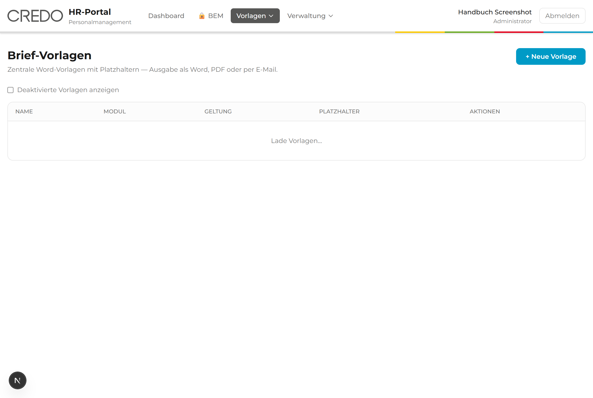
Schreiben Sie die Platzhalter einfach mit geschweiften Klammern in Ihren Word-Text, etwa: „Sehr geehrte/r {anrede} {nachname}". Das Portal erkennt sie automatisch beim Hochladen.
Diese Platzhalter werden besonders häufig gebraucht:
| Platzhalter | Wird ersetzt durch | Beispiel |
|---|---|---|
{vorname} | den Vornamen | Erika |
{nachname} | den Nachnamen | Mustermann |
{anrede} | die Anrede | Frau |
{plz_ort} | Postleitzahl und Ort | 32425 Minden |
{eintrittsdatum} | den Vertragsbeginn | 01.09.2026 |
{mandant_name} | die Einrichtung | Gymnasium |
{datum} | das heutige Datum | 17.06.2026 |
Manche Platzhalter stehen für sehr persönliche Daten wie die Kontonummer ({iban}), die Sozialversicherungsnummer ({sv_nummer}) oder die Steuer-ID ({steuer_id}). Im Variablen-Katalog sind sie mit einem roten Punkt markiert. Nutzen Sie sie nur, wenn das Schreiben sie wirklich braucht. Jede Verwendung wird protokolliert.
Ein Schreiben aus einer Brief-Vorlage erzeugen
Aus einer fertigen Vorlage erstellen Sie jederzeit ein konkretes Schreiben.
- Klicken Sie in der Liste bei der Vorlage auf Erzeugen.
- Wählen Sie das Ausgabeformat: Word, PDF oder Per E-Mail.
- Füllen Sie bei Bedarf einzelne Platzhalter von Hand aus. Leere Felder ergänzt das Portal automatisch oder markiert sie mit
___. - Lösen Sie die Erzeugung aus.
Im Fenster sehen Sie einen „Variablen-Katalog" mit allen verfügbaren Platzhaltern. Ein Klick darauf kopiert den Platzhalter. Sie können ihn dann in Word einfügen.
Das fertige Schreiben wird heruntergeladen oder direkt per E-Mail verschickt – vollständig mit den echten Daten gefüllt.
11.3 Checklisten, Zeugnisse und weitere Vorlagen
Im Menü Vorlagen finden Sie weitere Vorlagen-Arten. Sie funktionieren nach demselben Muster: öffnen, anpassen, speichern. Hier eine Übersicht, wofür sie da sind:
| Vorlage | Wofür sie da ist |
|---|---|
| Checklisten | Feste Aufgabenlisten für Onboarding, Offboarding und Verbeamtung. Sie legen die Aufgaben, ihre Reihenfolge und Fristen fest. |
| Exit-Interview | Die Fragen der Abschluss-Befragung. Sie bestimmen Kategorien, Fragen und Antwortformen. |
| Zeugnis-Bewertung | Bewertungsbögen für Arbeitszeugnisse, getrennt nach Berufsgruppe. Mit Kriterien, Gewichtung und Noten von 1 bis 6. |
| Beurteilungs-Vorlagen | Bögen für die dienstliche Beurteilung im Rahmen der Verbeamtung – rechtssicher nach den Vorgaben für NRW. |
| BEM-Vorlagen | Checklisten und Datenschutz-Texte für das Eingliederungsmanagement. Anpassbar, falls sich Gesetze ändern. |
| Vertragsverlängerung | Vertrags-Vorlagen für Verlängerung oder Entfristung, mit eigenem Platzhalter-Katalog (zum Beispiel {neues_vertragsende}, {entgeltgruppe}). Wird im Vertragsende-Vorgang genutzt (siehe Kapitel 5.3). |
Viele Vorlagen gibt es in einer gemeinsamen Fassung für alle („Global"). Einzelne Einrichtungen können bei Bedarf eine eigene Fassung hinterlegen. Diese eigene Fassung gilt dann nur für diese eine Einrichtung.
Sie wissen, welche Vorlagen-Art wofür gedacht ist, und finden sie sicher im Menü „Vorlagen".
12. Verwaltung: Benutzer, Einrichtungen und Einstellungen
Im Bereich Verwaltung richten Sie das Portal grundlegend ein. Hier legen Sie Benutzer und Einrichtungen an und stellen den E-Mail-Versand ein. Diese Aufgaben übernehmen meist wenige Personen.
Die Verwaltung sehen nur Administrator und HR-Leitung. Die Einrichtungs-Verwaltung ist allein dem Administrator vorbehalten.
12.1 Benutzer verwalten
Hier legen Sie fest, wer sich am Portal anmelden darf und was diese Person sehen kann. Jede Mitarbeiterin und jeder Mitarbeiter braucht ein eigenes Benutzerkonto.
Einen neuen Benutzer anlegen
- Öffnen Sie Verwaltung → Benutzer.
- Klicken Sie auf + Neuer Benutzer.
- Füllen Sie Vorname, Nachname und E-Mail aus.
- Vergeben Sie ein Passwort (mindestens sechs Zeichen).
- Wählen Sie die Rolle aus (siehe die Tabelle in Kapitel 2.3).
- Klicken Sie auf Speichern.
Eine grüne Meldung bestätigt: „Benutzer wurde erfolgreich erstellt". Die Person kann sich nun mit E-Mail und Passwort anmelden.
Einen Benutzer bearbeiten oder deaktivieren
Verlässt jemand die Gruppe, schalten Sie das Konto ab, statt es zu löschen. So bleibt das Protokoll vollständig.
- Klicken Sie in der Liste bei der Person auf Bearbeiten, um Daten oder Rolle zu ändern.
- Um den Zugang zu sperren, klicken Sie auf Deaktivieren und bestätigen Sie.
Beim Bearbeiten können Sie ein neues Passwort vergeben. Lassen Sie das Feld leer, bleibt das bisherige Passwort bestehen.
Der Status der Person zeigt „Aktiv" oder „Inaktiv". Inaktive Personen können sich nicht mehr anmelden, bleiben aber im Protokoll erhalten.
12.2 Einrichtungen (Mandanten) verwalten
Hier pflegen Sie die 16 Einrichtungen der CREDO-Gruppe – die Schulen, Kitas und Vereine. Im Portal heißen sie „Mandanten". Jeder Vorgang gehört zu einer dieser Einrichtungen.
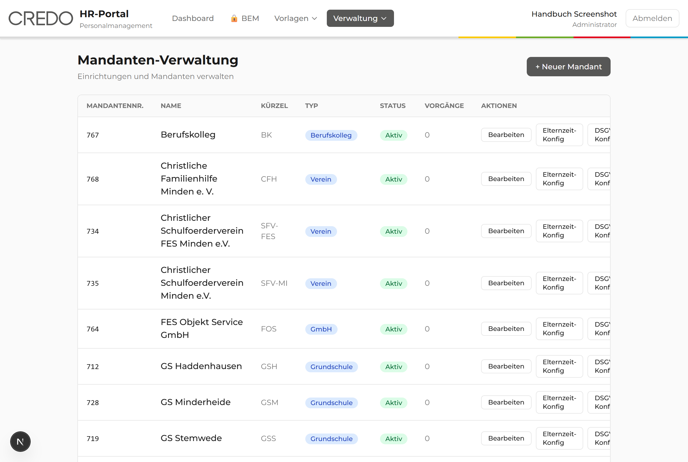
Eine neue Einrichtung anlegen
- Öffnen Sie Verwaltung → Mandanten.
- Klicken Sie auf + Neuer Mandant.
- Geben Sie die Mandantennummer und den Namen ein.
- Wählen Sie den Typ aus (zum Beispiel „Gymnasium" oder „Kita").
- Klicken Sie auf Speichern.
Die neue Einrichtung erscheint in der Liste und steht beim Anlegen von Vorgängen zur Auswahl.
Eine Einrichtung genauer einstellen
Jede Einrichtung hat zusätzliche Einstellungen. Sie erreichen sie über die Links in der jeweiligen Zeile. Diese Feineinstellungen lohnen sich besonders bei einer neuen Einrichtung:
- Starterpaket – die Dokumente festlegen, die neue Mitarbeitende automatisch erhalten.
- DSGVO-Konfiguration – die für den Datenschutz verantwortliche Stelle hinterlegen (Name und Anschrift).
- Elternzeit-Konfiguration – Geschäftsführung und Ansprechpartner für Elternzeit-Briefe eintragen.
- BEM-Ansprechpartner – die Personen festlegen, die im BEM angesprochen werden können.
- Vertragsende-Konfiguration – festlegen, welche Felder die Führungskraft im Vertragsdaten-Formular sieht und ob die Vorstands-/Geschäftsführungs-Abstimmung abgefragt wird (siehe Kapitel 5.2).
Im Starterpaket wählen Sie aus verfügbaren Dokumenten aus und bringen sie mit den Pfeilen ↑ und ↓ in die richtige Reihenfolge. Vergessen Sie am Ende nicht, auf Speichern zu klicken.
Die Einrichtung ist vollständig eingerichtet. Onboarding, Elternzeit und BEM funktionieren für sie nun mit den richtigen Angaben.
12.3 Einstellungen und E-Mail-Versand
Unter Verwaltung → Einstellungen steuern Sie, wie das Portal E-Mails verschickt. Die Seite ist in mehrere Reiter unterteilt. Diese sind die wichtigsten:
Alle automatischen E-Mails – zum Beispiel Einladungen, Benachrichtigungen und das Starterpaket – versendet das Portal selbst über SMTP. Das ist der primäre und wichtigste Versandweg. „Webhooks" sind nur ein optionaler Zusatz, um andere Programme anzubinden; für den E-Mail-Versand brauchen Sie sie nicht.
| Reiter | Wofür er da ist |
|---|---|
| Versand-Status | Eine Ampel pro E-Mail-Art: Grün heißt „alles bereit", Rot heißt „hier fehlt noch etwas". |
| E-Mail-Vorlagen | Den Text der automatischen E-Mails anpassen – Betreff, Empfänger und Inhalt. |
| Versandprotokoll | Die Liste aller verschickten E-Mails mit Status (verschickt, fehlgeschlagen, übersprungen). |
| SMTP | Die technischen Zugangsdaten für den E-Mail-Versand. „SMTP" ist das Standardverfahren, mit dem Programme E-Mails versenden – und der primäre Versandweg des Portals. |
| Webhooks | Nur ein optionaler Zusatzkanal, um andere Programme anzubinden. Für den E-Mail-Versand nicht nötig – das übernimmt SMTP. |
| Abteilungen | Die Abteilungen mit E-Mail-Adressen, die beim Offboarding ihre Aufgabenlisten erhalten. |
| API-Zugang | Zugangsschlüssel für andere Programme, die Auswertungen abrufen dürfen. |
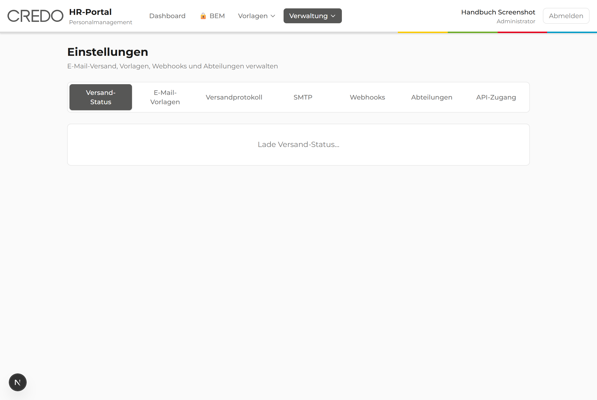
Den E-Mail-Versand einrichten und testen
Damit das Portal überhaupt E-Mails senden kann, müssen einmalig die SMTP-Zugangsdaten eingetragen sein. Diese erhalten Sie von Ihrer IT.
- Öffnen Sie den Reiter SMTP.
- Tragen Sie die Daten ein, die Ihnen die IT genannt hat (Server, Port, Absender).
- Klicken Sie auf Speichern.
- Klicken Sie auf Test-Versand und geben Sie Ihre eigene Adresse ein.
Sehen Sie oben ein rotes Banner „SMTP ist nicht aktiv", verschickt das Portal keine E-Mails. Richten Sie zuerst den SMTP-Reiter ein. Alle anderen Funktionen arbeiten trotzdem normal weiter.
Die Test-E-Mail kommt in Ihrem Postfach an. Der SMTP-Status zeigt Grün. Das Portal kann nun automatische E-Mails versenden.
Eine Ferienzeit für die Elternzeit hinterlegen
Für die Feriensperrfrist bei der Elternzeit muss das Portal die Schulferien kennen (siehe Kapitel 7). Diese pflegen Sie auf einer eigenen Seite.
- Öffnen Sie Einstellungen → Schulferien.
- Klicken Sie auf + Neue Schulferien.
- Geben Sie Schuljahr, Bezeichnung sowie Anfangs- und Enddatum ein.
- Klicken Sie auf Speichern.
Die Ferienzeit steht in der Liste. Das Portal berücksichtigt sie bei der Berechnung der Elternzeit-Fristen.
12.4 Das Protokoll (Audit-Log)
Das Portal hält jede wichtige Aktion fest – etwa „Vorgang erstellt" oder „Status geändert". Diese lückenlose Aufzeichnung heißt „Audit-Log" (sprich: Odit-Logg) und dient der Nachvollziehbarkeit. So lässt sich jederzeit klären, wer was wann getan hat.
- Öffnen Sie Verwaltung → Audit-Log.
- Grenzen Sie die Liste über den Zeitraum, die Aktion oder die Person ein.
- Klicken Sie bei einem Eintrag auf Details, um mehr zu sehen.
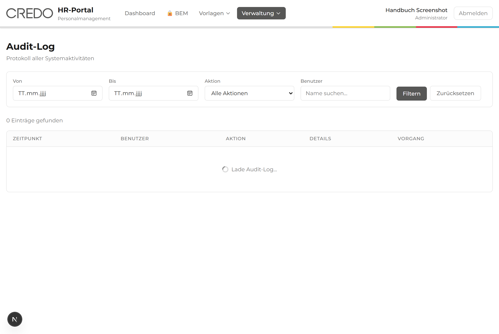
Sie sehen eine nachvollziehbare Liste aller Aktionen mit Datum, Person und Art der Änderung.
13. Hilfe bei Problemen und häufige Fragen
Etwas klappt nicht wie erwartet? Das ist völlig normal und meistens schnell gelöst. Hier finden Sie die häufigsten Fragen mit ihrer Antwort.
Ich kann mich nicht anmelden.
Prüfen Sie ganz in Ruhe drei Dinge:
- Ist die E-Mail-Adresse richtig geschrieben?
- Ist die Feststelltaste (Caps Lock) versehentlich aktiv?
- Hilft beides nicht, bitten Sie Ihre Administratorin oder Ihren Administrator um ein neues Passwort.
Ein Menüpunkt fehlt bei mir.
Das ist kein Fehler. Ihre Rolle gibt diesen Bereich nicht frei. Brauchen Sie ihn für Ihre Arbeit, sprechen Sie mit Ihrer Administratorin oder Ihrem Administrator (siehe Kapitel 2.3).
Eine E-Mail wurde nicht verschickt.
Schauen Sie unter Einstellungen → Versandprotokoll nach. Dort steht bei jeder E-Mail, ob sie verschickt wurde. Zeigt das Portal oben ein rotes Banner „SMTP ist nicht aktiv", muss zuerst der E-Mail-Versand eingerichtet werden (siehe Kapitel 12.3).
Das Starterpaket lässt sich nicht versenden.
Wahrscheinlich wurde für diese Einrichtung noch kein Starterpaket zusammengestellt. Eine Administratorin kann das unter Mandanten → Starterpaket nachholen (siehe Kapitel 12.2).
Ich habe einen Vorgang nicht in der Liste gefunden.
Vielleicht ist er schon abgeschlossen. Klicken Sie auf dem Dashboard auf Archiv anzeigen. Setzen Sie außerdem mit Filter zurücksetzen alle Filter zurück (siehe Kapitel 2.2).
Ich habe versehentlich etwas geändert.
Keine Sorge. Öffnen Sie den Vorgang erneut und korrigieren Sie den Wert über Daten bearbeiten. Jede Änderung wird zudem im Protokoll festgehalten, sodass nichts verloren geht.
Wenden Sie sich an die Personalverwaltung der CREDO-Gruppe. Schreiben Sie am besten kurz auf, was Sie tun wollten und welche Meldung erschienen ist. Das hilft bei der schnellen Lösung.
14. Glossar: Fachbegriffe einfach erklärt
Im Portal tauchen einige Fachwörter auf. Hier finden Sie sie in alphabetischer Reihenfolge mit einer einfachen Erklärung.
| Begriff | Bedeutung |
|---|---|
| Audit-Log | Das Protokoll. Eine Liste, die festhält, wer wann was im Portal getan hat. |
| BAD | Betriebsärztlicher Dienst. Die Betriebsärztin oder der Betriebsarzt. |
| BEM | Betriebliches Eingliederungsmanagement. Unterstützung bei der Rückkehr nach längerer Krankheit. |
| Browser | Das Programm, mit dem Sie Internetseiten öffnen, zum Beispiel Edge oder Chrome. |
| Dashboard | Die Startseite des Portals mit der Übersicht aller Vorgänge. |
| DMS | Dokumentenmanagementsystem. Das digitale Archiv für Akten und Dokumente. |
| DSGVO | Datenschutz-Grundverordnung. Das Gesetz zum Schutz persönlicher Daten. |
| Filter | Eine Einstellung, die nur die gewünschten Einträge anzeigt und den Rest ausblendet. |
| Fristen-Ampel | Die farbige Einstufung eines Vertragsendes nach verbleibender Zeit: Blau „Beobachten", Gelb „Warnung", Rot „Kritisch". |
| IBAN | Die internationale Kontonummer für die Bankverbindung. |
| Klappmenü (Dropdown) | Eine Auswahlliste, die sich beim Anklicken nach unten öffnet. |
| Magic Link | Ein besonderer Einmal-Zugangslink ohne Passwort, zum Beispiel für den Personalfragebogen. |
| Mandant | Eine Einrichtung der CREDO-Gruppe – eine Schule, Kita oder ein Verein. |
| MAV | Mitarbeitervertretung. Muss bei kirchlichen Trägern bei bestimmten Personalentscheidungen beteiligt werden, zum Beispiel beim Vertragsende. |
| Modul | Ein Bereich des Portals, zum Beispiel Onboarding oder Elternzeit. |
| Offboarding | Das Ausscheiden von Mitarbeitenden. |
| Onboarding | Die Einstellung neuer Mitarbeitender. |
| Ein fertiges, unveränderbares Dokumentformat. Sieht überall gleich aus. | |
| Pflichtfeld | Ein Feld, das ausgefüllt werden muss. Oft mit einem Sternchen * markiert. |
| Platzhalter (Variable) | Ein Stellvertreter in Klammern wie {vorname}, der durch den echten Wert ersetzt wird. |
| PSI | Die interne Bezeichnung für den Verbeamtungs-Prozess. |
| QR-Code | Ein quadratisches Strichbild, das ein Computer schnell einlesen kann. |
| Reiter (Tab) | Eine Karteikarte zum Wechseln zwischen Bereichen einer Seite. |
| Rolle | Die Berechtigung einer Person. Sie bestimmt, was man sehen und tun darf. |
| Session | Die Zeit, in der Sie angemeldet sind. |
| SMTP | Das Standardverfahren, mit dem Programme E-Mails versenden – im Portal der primäre Versandweg. |
| Starterpaket | Eine Sammlung wichtiger Dokumente für neue Mitarbeitende. |
| Status | Der Bearbeitungsstand eines Vorgangs, zum Beispiel „Offen" oder „Abgeschlossen". |
| TzBfG | Teilzeit- und Befristungsgesetz. Regelt unter anderem, wie oft und wie lange ein Vertrag befristet werden darf. |
| Vertragsende | Der Vorgangstyp, der einen auslaufenden befristeten Vertrag begleitet, bis er verlängert oder zum Austritt wird. |
| Vorgang | Ein einzelner Fall, zum Beispiel eine Einstellung oder ein Austritt. |
| Vorlage | Ein wiederverwendbares Muster für Schreiben, Formulare oder Checklisten. |
| Webhook | Eine automatische Verbindung, über die das Portal andere Programme benachrichtigt. |
Damit endet das Handbuch. Wir wünschen Ihnen eine gute und sichere Arbeit mit dem CREDO HR-Portal.
↑ Zurück zum Inhaltsverzeichnis